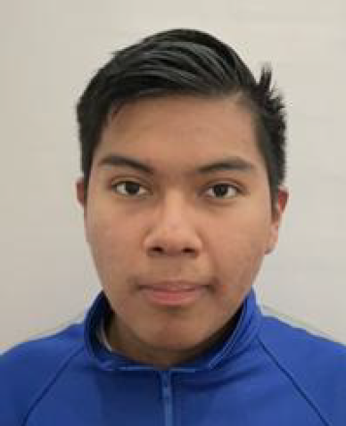
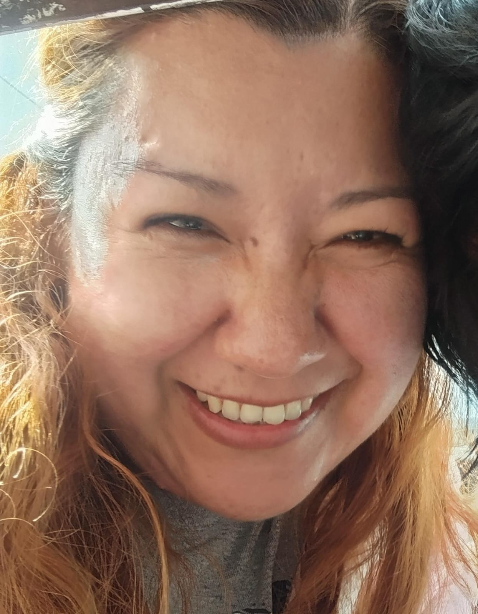
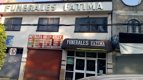

Me llamo Ismael Sanchez Reyes, vivo con mi madre y dos perros en una casa pequeña pero suficiente para nosotros.

Nuestra casa es una tipo de vecindad de solo familia donde en otros departamentos viven mi tio, tia y mi prima por separado, es una casa de tres pisos, y un patio.

Mis mayores virtudes es que aunque las situaciones apunten al peor de los resultados siempre busco la forma de solucionarlo sin rendirme, aparte de que aprendo muy rapido si se me explica sin distracciones o desvios del tema lo cual me ayuda bastante con el tema de no rendirme. Aunque mis mayores defectos son el echo de que me estreso facilmente, o que me distraigo facilmente, aparte de que suelo procrastinar bastante y no sabes socializar.
Mis aspiraciones a futuro son poder cursar la carrera de computación para aprender a programar, esto debido a que es una de las cosas que me interesa aprender pero no creo poder por mi cuenta. Otra de mis aspiraciones a futuro es poder terminar mis estudios completos sin atorarme.